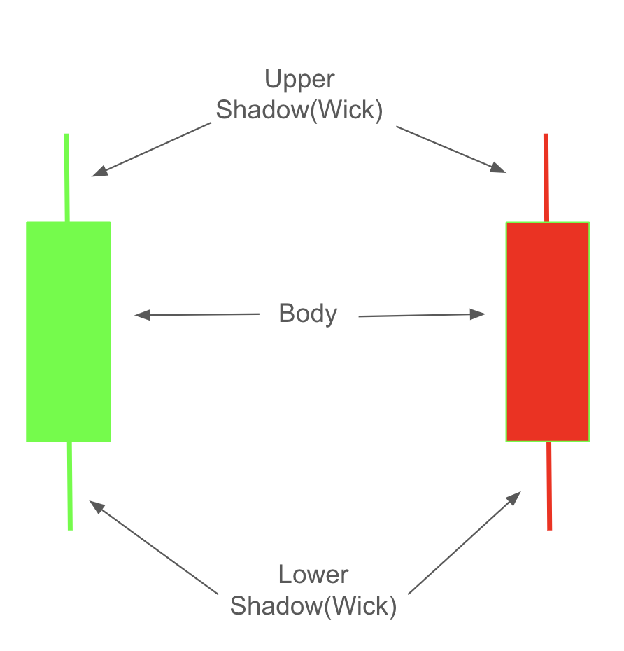

Project-1: Candlestick Patterns#
import yfinance as yf
import numpy as np
import matplotlib.pyplot as plt
import pandas as pd
import statistics
from sklearn.metrics import accuracy_score
Candlestick Charts#
Candlestick charts visually represent stock price movements using four key values: open, high, low, and close. Each candlestick has two main parts:
Body: A rectangle representing the range between the open and close prices.
If the close price is higher than the open price, it indicates that the stock price increased over the period, and the body is typically colored green (or white).
If the close price is lower than the open price, it shows that the stock price decreased, and the body is usually colored red (or black).
Shadow/Wick: A line extending from the body to represent the high and low prices.
The upper shadow extends from the top of the body to the high price, indicating the highest price reached within the time period.
The lower shadow extends from the bottom of the body to the low price, showing the lowest price reached.
This color-coded format helps investors quickly interpret market trends, with green candles indicating upward momentum and red candles indicating downward momentum.


Data#
To identify the candlestick patterns, we will import Amazon’s historical stock data for the period from January 1, 2020, to January 31, 2020. This dataset, referred to as training, will be used to identify patterns within it.
df_train = yf.Ticker('AMZN').history(start='2020-1-1', end='2020-1-31')
df_train.head().round(2)
| Open | High | Low | Close | Volume | Dividends | Stock Splits | |
|---|---|---|---|---|---|---|---|
| Date | |||||||
| 2020-01-02 00:00:00-05:00 | 93.75 | 94.90 | 93.21 | 94.90 | 80580000 | 0.0 | 0.0 |
| 2020-01-03 00:00:00-05:00 | 93.22 | 94.31 | 93.22 | 93.75 | 75288000 | 0.0 | 0.0 |
| 2020-01-06 00:00:00-05:00 | 93.00 | 95.18 | 93.00 | 95.14 | 81236000 | 0.0 | 0.0 |
| 2020-01-07 00:00:00-05:00 | 95.22 | 95.69 | 94.60 | 95.34 | 80898000 | 0.0 | 0.0 |
| 2020-01-08 00:00:00-05:00 | 94.90 | 95.55 | 94.32 | 94.60 | 70160000 | 0.0 | 0.0 |
In this project, the last three columns are not relevant and will therefore be removed.
df_train = df_train.iloc[:,:-3]
df_train.head().round(2)
| Open | High | Low | Close | |
|---|---|---|---|---|
| Date | ||||
| 2020-01-02 00:00:00-05:00 | 93.75 | 94.90 | 93.21 | 94.90 |
| 2020-01-03 00:00:00-05:00 | 93.22 | 94.31 | 93.22 | 93.75 |
| 2020-01-06 00:00:00-05:00 | 93.00 | 95.18 | 93.00 | 95.14 |
| 2020-01-07 00:00:00-05:00 | 95.22 | 95.69 | 94.60 | 95.34 |
| 2020-01-08 00:00:00-05:00 | 94.90 | 95.55 | 94.32 | 94.60 |
The following code converts the original index (dates) into a separate column named Date and assigns new integer-based indexes starting from 0, 1, 2, and so on
# reset index
df_train.reset_index(inplace=True)
df_train.head().round(2)
| Date | Open | High | Low | Close | |
|---|---|---|---|---|---|
| 0 | 2020-01-02 00:00:00-05:00 | 93.75 | 94.90 | 93.21 | 94.90 |
| 1 | 2020-01-03 00:00:00-05:00 | 93.22 | 94.31 | 93.22 | 93.75 |
| 2 | 2020-01-06 00:00:00-05:00 | 93.00 | 95.18 | 93.00 | 95.14 |
| 3 | 2020-01-07 00:00:00-05:00 | 95.22 | 95.69 | 94.60 | 95.34 |
| 4 | 2020-01-08 00:00:00-05:00 | 94.90 | 95.55 | 94.32 | 94.60 |
Since the time component of the Date column values is not required, it will be removed.
df_train['Date'] = [i.date() for i in df_train.Date]
df_train.head().round(2)
| Date | Open | High | Low | Close | |
|---|---|---|---|---|---|
| 0 | 2020-01-02 | 93.75 | 94.90 | 93.21 | 94.90 |
| 1 | 2020-01-03 | 93.22 | 94.31 | 93.22 | 93.75 |
| 2 | 2020-01-06 | 93.00 | 95.18 | 93.00 | 95.14 |
| 3 | 2020-01-07 | 95.22 | 95.69 | 94.60 | 95.34 |
| 4 | 2020-01-08 | 94.90 | 95.55 | 94.32 | 94.60 |
In the following code, fcc represents future close change from the current date to the next day, where:
\(-1\) indicates a downward change (Down),
\(0\) indicates no change (No change), and
\(1\) indicates an upward change (Up).
# future close change
df_train['fcc'] = [np.sign(df_train.Close.loc[i+1]-df_train.Close.loc[i]) for i in range(len(df_train)-1)]+[np.nan]
df_train.head().round(2)
| Date | Open | High | Low | Close | fcc | |
|---|---|---|---|---|---|---|
| 0 | 2020-01-02 | 93.75 | 94.90 | 93.21 | 94.90 | -1.0 |
| 1 | 2020-01-03 | 93.22 | 94.31 | 93.22 | 93.75 | 1.0 |
| 2 | 2020-01-06 | 93.00 | 95.18 | 93.00 | 95.14 | 1.0 |
| 3 | 2020-01-07 | 95.22 | 95.69 | 94.60 | 95.34 | -1.0 |
| 4 | 2020-01-08 | 94.90 | 95.55 | 94.32 | 94.60 | 1.0 |
In the first row, fcc is -1 because the current close value is 94.90, and the next day’s close value is 93.75, indicating a decline in the closing price.
Visualization#
def cs_visualize(hp, op, cp, lp, x=0, details=False, linewidth=20):
if cp > op: color = 'green'
elif cp < op: color = 'red'
else: color ='black'
plt.plot([x,x], [lp, hp], c=color)
if cp != op:
plt.plot([x,x], [op, cp], c=color, linewidth=linewidth)
else:
plt.plot([x-0.1,x+0.1], [op, cp], c=color, linewidth=1)
if details:
plt.text(x+0.01, hp, 'high')
plt.text(x+0.01, lp , 'low')
plt.text(x+0.01, cp, 'close')
plt.text(x+0.01, op, 'open')
plt.figure(figsize=(2,4))
cs_visualize(hp=10, op=3, cp=7, lp=1, details=False, linewidth=20)
plt.figure(figsize=(2,4))
cs_visualize(hp=10, op=3, cp=7, lp=1, details=False, linewidth=20)
plt.figure(figsize=(2,4))
cs_visualize(hp=10, op=7, cp=3, lp=1, details=True, linewidth=20)
plt.figure(figsize=(2,4))
cs_visualize(hp=10, op=5, cp=5, lp=1)
plt.figure(figsize=(2,4))
cs_visualize(hp=5, op=5, cp=5, lp=5)

def cs_visualize_df(data, M=0, N=None):
plt.figure(figsize=(20,5))
for i in data.index[M:N]:
hp, op, cp, lp = data[['High','Open', 'Close', 'Low']].loc[i]
cs_visualize(hp, op, cp, lp, x=i)
cs_visualize_df(df_train, M=0, N=None)
Encoding#
We will use the table below to encode the candlestick charts. If the open and close values are equal, the candlestick is referred to as a Doji.
Condition |
Code |
Type |
|---|---|---|
hp > op > cp > lp |
a |
Decreasing |
hp = op > cp > lp |
b |
Decreasing |
hp = op > cp = lp |
b |
Decreasing |
hp > op > cp = lp |
d |
Decreasing |
hp > cp > op > lp |
e |
Increasing |
hp = cp > op > lp |
f |
Increasing |
hp = cp > op = lp |
g |
Increasing |
hp > cp > op = lp |
h |
Increasing |
hp > op = cp > lp |
i |
Doji |
hp = op = cp > lp |
j |
Doji |
hp = op = cp = lp |
k |
Doji |
hp > op = cp = lp |
l |
Doji |
The code below generates an encoding for the given high, open, close, and low price values.
def encoder(hp, op, cp, lp):
if hp > op > cp > lp: return 'a'
if hp == op > cp > lp: return 'b'
if hp == op > cp == lp: return 'c'
if hp > op > cp == lp: return 'd'
if hp > cp > op > lp: return 'e'
if hp == cp > op > lp: return 'f'
if hp == cp > op == lp: return 'g'
if hp > cp > op == lp: return 'h'
if hp > op == cp > lp: return 'i'
if hp == op == cp > lp: return 'j'
if hp == op == cp == lp: return 'k'
if hp > op == cp == lp: return 'l'
encoder(hp=10, op=4, cp=6, lp=1)
'e'
encoder(hp=10, op=6, cp=4, lp=1)
'a'
The following code takes a DataFrame as input and returns a new DataFrame with same data and an additional column that contains the encoded values for each corresponding row.
def df_encoder(data):
data_ = data.copy()
encoder_list = []
for i in data_.index:
hp, op, cp, lp = data_[['High','Open', 'Close', 'Low']].loc[i]
encoder_list.append(encoder(hp, op, cp, lp))
data_['code'] = encoder_list
return data_
df_train = df_encoder(df_train)
df_train.head().round(2)
| Date | Open | High | Low | Close | fcc | code | |
|---|---|---|---|---|---|---|---|
| 0 | 2020-01-02 | 93.75 | 94.90 | 93.21 | 94.90 | -1.0 | f |
| 1 | 2020-01-03 | 93.22 | 94.31 | 93.22 | 93.75 | 1.0 | h |
| 2 | 2020-01-06 | 93.00 | 95.18 | 93.00 | 95.14 | 1.0 | h |
| 3 | 2020-01-07 | 95.22 | 95.69 | 94.60 | 95.34 | -1.0 | e |
| 4 | 2020-01-08 | 94.90 | 95.55 | 94.32 | 94.60 | 1.0 | a |
The chart below illustrates the candlestick charts along with their corresponding codes.
cs_visualize_df(df_train, M=0, N=None)
plt.xticks(range(len(df_train)), df_train.code)
plt.grid(axis='x');
Change Points#
Change points are the moments when the Close value changes its behavior. The six possible cases of behavior shifts are as follows:
Up to Down
Up to Equal
Equal to Down
Equal to Up
Down to Equal
Down to Up
Remark: The first day is also considered a change point.
The chart below displays 14 Close values. Points 1, 2, 3, 6, 9, 11, and 12 are identified as change points for the following reasons.
1: Starting point
2: Up to Equal
3: Equal to Up
6: Up to Down
9: Down to Up
11: Up to Down
12: Down to Up
In the following code:
The change_points column holds boolean values (True for a change point and False for non-change points).
The change_types column reflects the behavior of the Close value between consecutive days:
-1 indicates a “Down” movement (from the previous day to the current day).
1 indicates an “Up” movement (from the previous day to the current day).
0 indicates no change (the Close value stays equal from the previous day to the current day).
A pair like (-1, -1) would mean the Close value has moved down from the previous day to the current day and continued to move down from the current day to the next day.
def change_points(data):
data_ = data.copy()
change_pts, change_types = [True], ['Start']
for i in range(1, len(data_)-1):
left_change = int(np.sign(data_['Close'][i]-data_['Close'][i-1]))
right_change = int(np.sign(data_['Close'][i+1]-data_['Close'][i]))
if left_change != right_change:
change_pts.append(True)
else:
change_pts.append(False)
change_types.append((left_change, right_change))
change_pts.append(False)
change_types.append('End')
data_['change_points'] = change_pts
data_['change_types'] = change_types
return data_
df_train = change_points(df_train)
df_train.head().round(2)
| Date | Open | High | Low | Close | fcc | code | change_points | change_types | |
|---|---|---|---|---|---|---|---|---|---|
| 0 | 2020-01-02 | 93.75 | 94.90 | 93.21 | 94.90 | -1.0 | f | True | Start |
| 1 | 2020-01-03 | 93.22 | 94.31 | 93.22 | 93.75 | 1.0 | h | True | (-1, 1) |
| 2 | 2020-01-06 | 93.00 | 95.18 | 93.00 | 95.14 | 1.0 | h | False | (1, 1) |
| 3 | 2020-01-07 | 95.22 | 95.69 | 94.60 | 95.34 | -1.0 | e | True | (1, -1) |
| 4 | 2020-01-08 | 94.90 | 95.55 | 94.32 | 94.60 | 1.0 | a | True | (-1, 1) |
df_train = change_points(df_train)
df_train.tail().round(2)
| Date | Open | High | Low | Close | fcc | code | change_points | change_types | |
|---|---|---|---|---|---|---|---|---|---|
| 15 | 2020-01-24 | 94.57 | 94.75 | 92.37 | 93.08 | -1.0 | a | False | (-1, -1) |
| 16 | 2020-01-27 | 91.00 | 92.05 | 90.77 | 91.42 | 1.0 | e | True | (-1, 1) |
| 17 | 2020-01-28 | 92.03 | 92.91 | 91.50 | 92.66 | 1.0 | e | False | (1, 1) |
| 18 | 2020-01-29 | 93.20 | 93.74 | 92.75 | 92.90 | 1.0 | a | False | (1, 1) |
| 19 | 2020-01-30 | 92.90 | 93.64 | 92.53 | 93.53 | NaN | e | False | End |
def cp_visualizer(data, M=0, N=None):
plt.figure(figsize=(20,5))
plt.plot(data.index[M:N], data.Close[M:N], alpha=0.2)
color_list = ['black', 'red']
plt.scatter(data.index[M:N], data.Close[M:N], c=[color_list[i] for i in data.change_points[M:N]])
plt.xticks(data.index[M:N], data.code[M:N], fontsize=12)
plt.grid();
In the graph of Close values below, the red points indicate the change points, while the x-values correspond to the candlestick code for each corresponding day.
cp_visualizer(df_train, M=0, N=None)

Segmentation and Labeling#
The segmentation and labeling are based on the change points.
Each segment ends with a change point, and the chart below contains 7 segments.
Segment S-1 consists of only one point: 1.
Segment S-2 consists of only one point: 2.
Segment S-3 consists of only one point: 3.
Segment S-4 consists of three points: 4, 5, and 6 (change point).
Segment S-5 consists of three points: 7, 8, and 9 (change point).
Segment S-6 consists of two points: 10 and 11 (change point).
The last segment, S-7, consists of only one point: 12.
The label (called Trend in the paper) for each segment represents the direction of the next segment, as it reflects the future behavior that we aim to predict. Additionally, this label can be considered as the behavior immediately following the change point, representing the direction of movement after the change
The Equal direction is not considered as a label, and instead, the first non-equal direction is taken as the label (or trend) for the segment. This applies to the second segment below:
The trend of S-1 is the direction from Point-1 to Point-2: Up (+1).
The trend of S-2 is the direction from Point-3 to Point-4, or the direction of S-4: Up (+1).
The trend of S-3 is the direction from Point-3 to Point-4, or the direction of S-4: Up (+1).
The trend of S-4 is the direction from Point-6 to Point-7, or the direction of S-5: Down (-1).
The trend of S-5 is the direction from Point-9 to Point-10, or the direction of S-6: Up (+1).
The trend of S-6 is the direction from Point-11 to Point-12: Down (-1).
The trend of S-7 is the direction from Point-12 to Point-13: Up (+1).
Terminology#
K-line (k): Represents a single candlestick identified by its date, high, open, close, and low price values. It corresponds to a single letter in the coding system.
Example: ‘c’ and ‘a’ are examples of K-lines.
K-line Time Series (KTS): An ordered sequence of candlesticks, which can also consist of a single candlestick.
Example: ‘a’, ‘bbc’, ‘dd’ are examples of K-Line Time Series.
K-line Pattern: A pair consisting of a K-line Time Series (KTS) and its corresponding trend.
Example: (‘a’, 1), (‘bbc’, -1), (‘dd’, -1) are examples of K-line patterns.
Pattern Set (PSet): The collection of all K-line patterns within the training data.
Coding#
def segmentation(data):
segment_list, trend_list = [], []
pattern = ''
for i in range(len(data)-1):
pattern += data.code[i]
if data.change_points.loc[i]:
segment_list.append(pattern)
j = i
while True:
if data.change_types[j+1][0] != 0: # first non-equal direction
trend_list.append(data.change_types[j+1][0])
break
j += 1
pattern = ''
df_seg = pd.DataFrame()
df_seg['kts'] = segment_list
df_seg['trend'] = trend_list
df_seg_unique = pd.DataFrame(df_seg.value_counts()).reset_index()
return df_seg_unique
PSet = segmentation(df_train)
PSet.head()
| kts | trend | count | |
|---|---|---|---|
| 0 | a | -1 | 3 |
| 1 | a | 1 | 3 |
| 2 | aa | 1 | 1 |
| 3 | aaae | 1 | 1 |
| 4 | e | -1 | 1 |
Subsequence#
A sequence KTS-1 is a subsequence of another sequence KTS-2 if all the K-lines (letters) in KTS-1 appear in KTS-2 in the same order, though they may be separated by other K-lines (letters).
Examples:
'ab'is a subsequence of'dabc'(letters'a'and'b'appear in order).'ab'is a subsequence of'daebc'(letters'a'and'b'appear in order).'ab'is NOT a subsequence of'dbac'(letter'b'appears before'a').'ab'is NOT a subsequence of'dbeac'(letter'b'appears before'a').
def whethersub(X, Y):
if len(X) > len(Y): return 0
else:
k = 0
for i in range(len(X)):
if X[i] in Y[k:]:
k = Y.find(X[i], k)+1
else:
return 0
return 1
whethersub('ab', 'dabc')
1
whethersub('ab', 'dabc')
1
whethersub('ab', 'dbac')
0
whethersub('ab', 'dbeac')
0
whethersub('aec', 'abcde')
0
whethersub('ace', 'abcde')
1
whethersub('cd', 'abcde')
1
oNum#
oNum of a \(KTS_i\) in a Pattern Set (PSet) is defined as the number of KTS in the PSet for which \(KTS_i\) is a subsequence including itself (regardless of trend). For example consider the following PSet:
kts |
trend |
count |
oNum |
|---|---|---|---|
a |
1 |
5 |
10 |
a |
-1 |
2 |
10 |
b |
1 |
4 |
11 |
d |
-1 |
1 |
1 |
ae |
-1 |
3 |
3 |
bc |
1 |
7 |
7 |
oNum for (‘a’,1):
‘a’ of (‘a’,1) is a subsequence of the KTS ‘a’ of (‘a’,1)(There are 5 of them.)
‘a’ of (‘a’,1) is a subsequence of the KTS ‘a’ of (‘a’,-1)(There are 2 of them.)
‘a’ of (‘a’,1) is a subsequence of the KTS ‘ae’ of (‘ae’,-1)(There are 3 of them.)
oNum: 5 + 2 + 3 = 10.
oNum for (‘a’,-1):
‘a’ of (‘a’,-1) is a subsequence of the KTS ‘a’ of (‘a’,1)(There are 5 of them.)
‘a’ of (‘a’,-1) is a subsequence of the KTS ‘a’ of (‘a’,-1)(There are 2 of them.)
‘a’ of (‘a’,-1) is a subsequence of the KTS ‘ae’ of (‘ae’,-1)(There are 3 of them.)
oNum: 5 + 2 + 3 = 10.
oNum for (‘b’,1):
‘b’ of (‘b’,1) is a subsequence of the KTS ‘b’ of (‘b’,1)(There are 4 of them.)
‘b’ of (‘b’,1) is a subsequence of the KTS ‘bc’ of (‘bc’,1)(There are 7 of them.)
oNum: 4 + 7 = 11 .
oNum for (‘d’,-1):
‘d’ of (‘d’,-1) is a subsequence of the KTS ‘b’ of (‘b’,1)(There is 1 of them.)
oNum: 1.
oNum for (‘ae’:
‘ae’ of (‘ae’,-1) is a subsequence of the KTS ‘ae’ of (‘ae’,-1)(There are 3 of them.)
oNum: 3.
oNum for ‘bc’:
‘bc’ of (‘bc’,1) is a subsequence of the KTS ‘bc’ of (‘bc’,1)(There are 7 of them.)
oNum: 7.
def onum(pset):
pset_ = pset.copy()
onum_list = []
for i in range(len(pset)):
total = 0
for j in range(len(pset)):
total += whethersub(pset_.loc[i, 'kts'], pset_.loc[j, 'kts'])* pset_.loc[j, 'count']
onum_list.append(total)
pset_['onum'] = onum_list
return pset_
PRSet = onum(PSet)
PRSet.head()
| kts | trend | count | onum | |
|---|---|---|---|---|
| 0 | a | -1 | 3 | 8 |
| 1 | a | 1 | 3 | 8 |
| 2 | aa | 1 | 1 | 2 |
| 3 | aaae | 1 | 1 | 1 |
| 4 | e | -1 | 1 | 3 |
sameTrendNum#
The sameTrendNum of a \(KTS_i\) in a Pattern Set (PSet) is the number of KTS in the PSet for which:
\(KTS_i\) is a subsequence (including itself) of KTS.
The Trend of the KTS matches the Trend of \(KTS_i\)
Let’s keep working on the same following PSet as above:
kts |
trend |
count |
oNum |
sameTrendNum |
|---|---|---|---|---|
a |
1 |
5 |
10 |
5 |
a |
-1 |
2 |
10 |
5 |
b |
1 |
4 |
11 |
11 |
d |
-1 |
1 |
1 |
1 |
ae |
-1 |
3 |
3 |
3 |
bc |
1 |
7 |
7 |
7 |
oNum for (‘a’,1):
‘a’ of (‘a’,1) is a subsequence of the KTS ‘a’ of (‘a’,1) and Trends are matching. (There are 5 of them.)
‘a’ of (‘a’,1) is a subsequence of the KTS ‘a’ of (‘a’,-1) but Trends are not matching.
‘a’ of (‘a’,1) is a subsequence of the KTS ‘ae’ of (‘ae’,-1) but Trends are not matching.
sameTrenNum: 5.
oNum for (‘a’,-1):
‘a’ of (‘a’,-1) is a subsequence of the KTS ‘a’ of (‘a’,1) but Trends are NOT matching.
‘a’ of (‘a’,-1) is a subsequence of the KTS ‘a’ of (‘a’,-1) but Trends are not matching. ((There are 2 of them.)
‘a’ of (‘a’,-1) is a subsequence of the KTS ‘ae’ of (‘ae’,-1) and Trends are matching. (There are 3 of them.)
sameTrenNum: 2+3=5.
oNum for (‘b’,1):
‘b’ of (‘b’,1) is a subsequence of the KTS ‘a’ of (‘b’,1) and Trends are matching. (There are 4 of them.)
‘b’ of (‘b’,1) is a subsequence of the KTS ‘bc’ of (‘bc’,1) and Trends are matching. (There are 7 of them.)
sameTrenNum: 4+7=11.
oNum for (‘d’,-1):
‘d’ of (‘d’,-1) is a subsequence of the KTS ‘d’ of (‘d’,-1) and Trends are matching. (There is 1 of them.)
sameTrenNum: 1.
oNum for (‘ae’:
‘ae’ of (‘ae’,-1) is a subsequence of the KTS ‘ae’ of (‘ae’,-1) and Trends are matching. (There are 3 of them.)
sameTrenNum: 3.
oNum for ‘bc’:
‘bc’ of (‘bc’,1) is a subsequence of the KTS ‘bc’ of (‘bc’,1) and Trends are matching. (There are 7 of them.)
sameTrenNum: 7.
def sametrendnum(pset):
pset_ = pset.copy()
sametrendnum_list = []
for i in range(len(pset_)):
total = 0
for j in range(len(pset_)):
if whethersub(pset_.loc[i,'kts'], pset_.loc[j,'kts']) & (pset_.loc[i,'trend'] == pset_.loc[j, 'trend']):
total += pset_.loc[j, 'count']
sametrendnum_list.append(total)
pset_['sametrendnum'] = sametrendnum_list
return pset_
PRSet = sametrendnum(PRSet)
PRSet.head()
| kts | trend | count | onum | sametrendnum | |
|---|---|---|---|---|---|
| 0 | a | -1 | 3 | 8 | 3 |
| 1 | a | 1 | 3 | 8 | 5 |
| 2 | aa | 1 | 1 | 2 | 2 |
| 3 | aaae | 1 | 1 | 1 | 1 |
| 4 | e | -1 | 1 | 3 | 2 |
PACC#
The Pattern Accuracy Score is a metric that evaluates the reliability of a K-line Pattern \((KTS_i, Trend_i)\).
It is calculated as the ratio of matching trends among all the K-line patterns for which \(KTS_i\) is a subsequence. Formula:
\(\displaystyle PACC_i = \frac{sameTrenNum_i}{oNum_i}\)
Explanation
For example, if \(PACC_i = 0.30\), this indicates that \(30\%\) of the patterns where \(KTS_i\) is a subsequence have the same trend \(Trend_i\).
In other words, the reliability of the pattern \((KTS_i, Trend_i)\) is \(30\%\), as \(30\%\) of the matching K-line sequences support the same trend.
The Pattern Accuracy Score (PACC) is a value between 0 and 1.
A higher PACC value indicates a more reliable trend for the corresponding \(KTS_i\).
For example:
\(PACC_i = 0.90\): The trend is highly reliable, as \(90\%\) of patterns where \(KTS_i\) is a subsequence have the same trend \(Trend_i\).
\(PACC_i = 0.30\): The trend is less reliable, with only \(30\%\) agreement among the matching patterns.
The PACC values for the Pset above are:
kts |
trend |
count |
oNum |
sameTrendNum |
PACC |
|---|---|---|---|---|---|
a |
1 |
5 |
10 |
5 |
0.5 |
a |
-1 |
2 |
10 |
5 |
0.5 |
b |
1 |
4 |
11 |
11 |
1 |
d |
-1 |
1 |
1 |
1 |
1 |
ae |
-1 |
3 |
3 |
3 |
1 |
bc |
1 |
7 |
7 |
7 |
1 |
def pacc(pset):
pset_ = pset.copy()
pset_['pacc'] = pset_['sametrendnum'] / pset_['onum']
return pset_
PRSet = pacc(PRSet)
PRSet.head().round(2)
| kts | trend | count | onum | sametrendnum | pacc | |
|---|---|---|---|---|---|---|
| 0 | a | -1 | 3 | 8 | 3 | 0.38 |
| 1 | a | 1 | 3 | 8 | 5 | 0.62 |
| 2 | aa | 1 | 1 | 2 | 2 | 1.00 |
| 3 | aaae | 1 | 1 | 1 | 1 | 1.00 |
| 4 | e | -1 | 1 | 3 | 2 | 0.67 |
The set described above is called the Pattern Record Set (PRSet).
It consists of KTS-Trend pairs (KtsP) and their corresponding Pattern Accuracy Score (PACC) values.
Subsequence Model#
The Subsequence Model predicts the direction of the Close value for the next day based on a given new_KTS (a sequence of candlesticks/letters) and the Pattern Record Set (PRSet).
Steps of Prediction:
Find Subsequence Matches:
Identify all \(KTS_i\) in the PRSet for which \(KTS_i\) is a subsequence of new_KTS
Select Based on Highest PACC:
Among the matching subsequences, choose those with the highest PACC value.
Resolve Ties:
If multiple subsequences have the same highest PACC, choose the most common trend among them as the prediction.
Fallback Prediction:
If new_KTS has no matching subsequences in the PRSet, use the most common trend across the entire PRSet as the prediction.
Example:
For the PRSet below if new_KTS = ‘abc’
The subsequences from the PRSet are ‘a’, ‘b’, ‘bc’
The highest PCAA belongs to ‘b’ and ‘bc’
Trends for ‘b’ and ‘bc’ are both 1
The most common trend among them is 1
The prediction for new_KTS = ‘abc’ is 1, meaning that after ‘dbc’, there will be an increment in the Close value.
kts |
trend |
count |
oNum |
sameTrendNum |
PACC |
|---|---|---|---|---|---|
a |
1 |
5 |
10 |
5 |
0.5 |
a |
-1 |
2 |
10 |
5 |
0.5 |
b |
1 |
4 |
11 |
11 |
1 |
d |
-1 |
1 |
1 |
1 |
1 |
ae |
-1 |
3 |
3 |
3 |
1 |
bc |
1 |
7 |
7 |
7 |
1 |
def subsequence_model_predict(kts, prset):
best_pattern = []
best_pacc = [0]
best_trend = []
for i in range(len(prset)):
if (whethersub(prset.loc[i, 'kts'], kts)):
if prset.loc[i, 'pacc'] > best_pacc[-1]:
best_pattern = [prset.loc[i, 'kts']]
best_pacc = [prset.loc[i, 'pacc']]
best_trend = [ prset.loc[i, 'trend']]
elif prset.loc[i, 'pacc'] == best_pacc[-1]:
best_pattern.append(prset.loc[i, 'kts'])
best_pacc.append(prset.loc[i, 'pacc'])
best_trend.append(prset.loc[i, 'trend'])
if len(best_trend) == 0:
pred = statistics.mode(prset.trend)
elif len(best_trend) == 1:
pred = best_trend[0]
else:
pred = statistics.mode(best_trend)
return {'Best Pattern':best_pattern, 'Best PACC': best_pacc, 'Best Trend': best_trend, 'Prediction':pred}
subsequence_model_predict('aaee', PRSet)
{'Best Pattern': ['aa'],
'Best PACC': [1.0],
'Best Trend': [1],
'Prediction': 1}
subsequence_model_predict('acd', PRSet)
{'Best Pattern': ['a'],
'Best PACC': [0.625],
'Best Trend': [1],
'Prediction': 1}
Test Set#
The data from February 2020 is used to prepare the test set and evaluate the performance of the subsequence model.
The KTS’s in the test set are generated using each 5 consecutive days. Therefore, each KTS has a length of 5 days.
The actual future direction is determined by the change in direction from the last day of the 5-day period (the 5th day) to the 6th day. This change in direction is used as the target trend for the KTS. It is also the fcc of the 5th day
For example, if the Close value on the 5th day is higher than the 6th day, the trend would be Down (-1), and if the Close value on the 6th day is higher, the trend would be Up (+1).
This setup helps in testing the model’s ability to predict the future trend based on historical data and trends in the KTS.
df_test = yf.Ticker('AMZN').history(start='2020-2-1', end='2020-2-28')
df_test.reset_index(inplace=True)
df_test = df_test.iloc[:,:-3]
df_test['Date'] = [i.date() for i in df_test.Date]
df_test = df_encoder(df_test)
df_test['fcc'] = [np.sign(df_test.Close.loc[i+1]-df_test.Close.loc[i]) for i in range(len(df_test)-1)]+[np.nan]
df_test.head().round(2)
| Date | Open | High | Low | Close | code | fcc | |
|---|---|---|---|---|---|---|---|
| 0 | 2020-02-03 | 100.53 | 102.43 | 100.01 | 100.21 | a | 1.0 |
| 1 | 2020-02-04 | 101.49 | 102.99 | 100.77 | 102.48 | e | -1.0 |
| 2 | 2020-02-05 | 103.55 | 103.55 | 101.60 | 101.99 | b | 1.0 |
| 3 | 2020-02-06 | 102.05 | 102.82 | 101.24 | 102.51 | e | 1.0 |
| 4 | 2020-02-07 | 102.10 | 104.93 | 101.90 | 103.96 | e | 1.0 |
def test_data_prep(data, N=5):
test_data = []
for i in range(len(data)-N):
kts = ''
for j in range(N):
kts += data.code.loc[i+j]
test_data.append((kts, data.fcc.loc[i+j]))
if type(test_data[-1][-1]) != float:
test_data.pop()
return test_data
test_data = test_data_prep(df_test)
test_data
[('aebee', 1.0),
('ebeee', 1.0),
('beeea', 1.0),
('eeeaa', -1.0),
('eeaae', -1.0),
('eaaea', 1.0),
('aaeae', 1.0),
('aeaee', -1.0),
('eaeea', -1.0),
('aeeaa', -1.0),
('eeaae', -1.0),
('eaaea', 1.0)]
Prediction#
The prediction for the trend is done for each KTS generated using the test set, and the predicted values are compared with the actual trend values.
The accuracy score function returns the percentage of correctly predicted trends.
def subsequence_model_score(data, prset):
pred_trend_test = [subsequence_model_predict(kts, prset)['Prediction'] for (kts,trend) in data]
actual_trend_test = [trend for (kts,trend) in data]
return accuracy_score(pred_trend_test, actual_trend_test)
subsequence_model_score(test_data, PRSet)
0.25
Appendix#
The following function returns a tuple containing the training and test datasets for a specified stock and time period.
The training_ratio parameter represents the percentage of data allocated to the training set.
def get_training_test_data(stock='AMZN', start='2019-1-1', end='2021-1-31', training_ratio=0.96):
df = yf.Ticker(stock).history(start=start, end=end)
df = df.iloc[:,:-3]
df.reset_index(inplace=True)
df['Date'] = [i.date() for i in df.Date]
df['fcc'] = [np.sign(df.Close.loc[i+1]-df.Close.loc[i]) for i in range(len(df)-1)]+[np.nan]
training_length = int(len(df)*training_ratio)
training_data = df.iloc[:training_length,:]
test_data = df.iloc[training_length:,:]
test_data.reset_index(inplace=True, drop=True)
return (training_data, test_data)
df_train, df_test = get_training_test_data()
df_train.shape, df_test.shape
((503, 6), (21, 6))
df_train.head()
| Date | Open | High | Low | Close | fcc | |
|---|---|---|---|---|---|---|
| 0 | 2019-01-02 | 73.260002 | 77.667999 | 73.046501 | 76.956497 | -1.0 |
| 1 | 2019-01-03 | 76.000504 | 76.900002 | 74.855499 | 75.014000 | 1.0 |
| 2 | 2019-01-04 | 76.500000 | 79.699997 | 75.915497 | 78.769501 | 1.0 |
| 3 | 2019-01-07 | 80.115501 | 81.727997 | 79.459503 | 81.475502 | 1.0 |
| 4 | 2019-01-08 | 83.234497 | 83.830498 | 80.830498 | 82.829002 | 1.0 |
df_test.head()
| Date | Open | High | Low | Close | fcc | |
|---|---|---|---|---|---|---|
| 0 | 2020-12-30 | 167.050003 | 167.104996 | 164.123505 | 164.292496 | -1.0 |
| 1 | 2020-12-31 | 163.750000 | 164.145996 | 162.059998 | 162.846497 | -1.0 |
| 2 | 2021-01-04 | 163.500000 | 163.600006 | 157.201004 | 159.331497 | 1.0 |
| 3 | 2021-01-05 | 158.300507 | 161.169006 | 158.253006 | 160.925507 | -1.0 |
| 4 | 2021-01-06 | 157.324005 | 159.875504 | 156.557999 | 156.919006 | 1.0 |